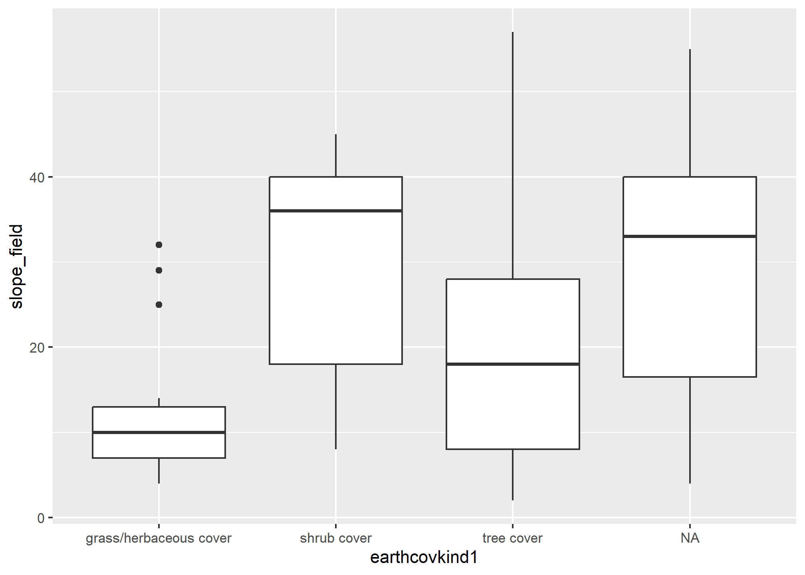
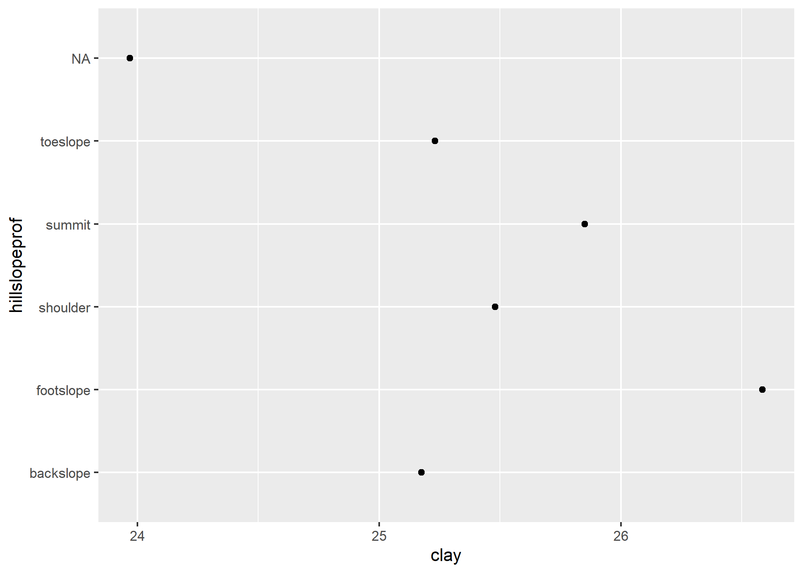

The goal of {ggspc} is to provide custom ‘Stat’, ‘Geom’ and ‘theme’ definitions for ‘SoilProfileCollection’ object compatibility with ‘ggplot2’.
Installation
You can install the development version of {ggspc} like so:
remotes::install_github("brownag/ggspc")Example
This a example shows how to solve the common problem of plotting variables contained in a SoilProfileCollection with ggplot2::ggplot()
library(aqp)
#> The legacy packages maptools, rgdal, and rgeos, underpinning the sp package,
#> which was just loaded, will retire in October 2023.
#> Please refer to R-spatial evolution reports for details, especially
#> https://r-spatial.org/r/2023/05/15/evolution4.html.
#> It may be desirable to make the sf package available;
#> package maintainers should consider adding sf to Suggests:.
#> The sp package is now running under evolution status 2
#> (status 2 uses the sf package in place of rgdal)
#> This is aqp 2.0
library(ggspc)
library(ggplot2)
data(loafercreek, package = "soilDB")
GHL(loafercreek) <- "genhz"Basics
This is a demonstration of what is possible with a simple fortify(<SPC>) method defined. The “fortify” method makes it such that names from horizon and site slots of the SPC can be used in ggplot() aesthetics via aes().
# site v.s. site level
ggplot(loafercreek, aes(earthcovkind1, slope_field)) +
geom_boxplot(na.rm = TRUE)
# site v.s. horizon level
ggplot(loafercreek, aes(hillslopeprof, clay)) +
geom_boxplot(na.rm = TRUE)
# horizon v.s. horizon level
ggplot(loafercreek, aes(clay, genhz)) +
geom_boxplot(na.rm = TRUE)
Depth Weighted Aggregation (stat_depth_weighted())
The stat_depth_weighted() function is a specialized {ggplot2} statistic intended for calculation of depth-weighted values for horizon data in a SoilProfileCollection. The default uses a constant interval from=0 to=200 (centimeters), but the intervals of interest may alternately be specified as site-level column names (unquoted), and therefore may vary between profiles.
Currently, stat_depth_weighted() only supports the “point” geometry type, but in future “boxplot” and others may be supported.
# default y aesthetic is the profile_id(<SPC>)
ggplot(loafercreek[1:10], aes(clay)) +
stat_depth_weighted(na.rm = TRUE)
# can use alternate y aesthetic, e.g. hillslopeprof
ggplot(loafercreek, aes(clay, hillslopeprof)) +
stat_depth_weighted(na.rm = TRUE)
# continuous y axes works too (horizon v.s. horizon)
ggplot(loafercreek, aes(clay, sand)) +
stat_depth_weighted(na.rm = TRUE)
# continuous y (horizon v.s. site)
ggplot(loafercreek, aes(clay, slope_field)) +
stat_depth_weighted(na.rm = TRUE)
# can combine with typical ggplot geoms (0-200cm mean over boxplots)
ggplot(loafercreek, aes(clay, hillslopeprof)) +
geom_boxplot(na.rm = TRUE) +
stat_depth_weighted(na.rm = TRUE, col = "red", pch = 17, cex = 3)
# use site-level columns for profile-specific intervals (e.g. PSCS)
ggplot() +
stat_depth_weighted(
loafercreek,
aes(clay, hillslopeprof),
na.rm = TRUE,
from = psctopdepth,
to = pscbotdepth
)